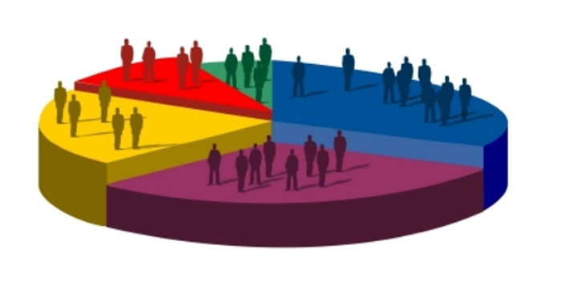
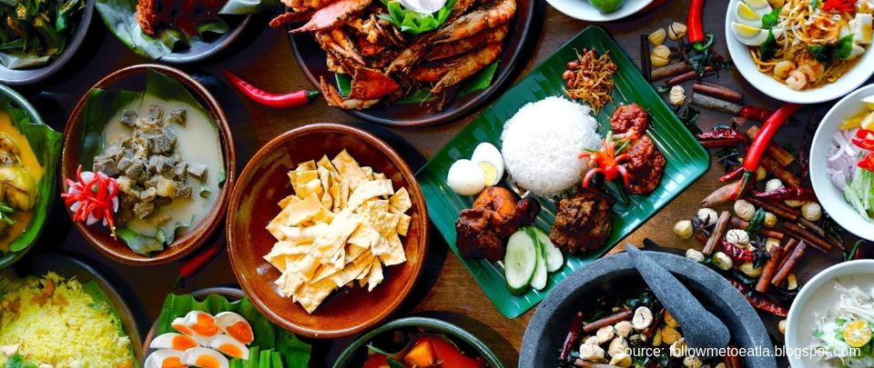

Malay
History

Malays are a predominately Muslim ethnic group that make up a large portion of the populations in Malaysia and Indonesia. The Malays are considered to be of Austronesian origin and have migrated to the Malay archipelago in a long series of migrations between 2500 and 1500 BC. The Malays final migration was roughly 3000 years ago where they move into the Malay Peninsula and occupy places such as the Malaya and Indonesia Peninsula.
Demographics
As of 2010, Malaysia’s population is estimated to be around 27.9 million people. According to the CIA’s World Factbook, 50.4 percent are Malays, 23.7 percent are Chinese, 11 percent are indigenous, 7.1 percent are Indian and 7.8 percent belong to other ethnic groups. This makes the Malay ethnic group the largest population in Malaysia. The main language for Malay people would be the Malay language. Different Malay people that are living in different states of Malaysia however would have developed different slangs and jargons of the Malay language which makes it unique.
Names

Malay people does not have surnames. Instead, men add their father’s name to their own name with the term “bin” which means “son of”. So for example Rosli bin Suleiman would mean Rosli the son of Suleiman. Women use the term “binti”, so for example Aysha binti Suleiman would mean Aysha the daughter of Suleiman.
Influence

The Malays have traditionally been the poorest group in Malaysia. For example, the main occupation for Malay people during the British colonization period would be farmers or fishers which have very low income. They have been dominated by other ethnic groups that are richer and more influential, particularly the Chinese. However, ever since Malaysia’s Independance, the number of Malay people skyrocketed which significantly increases the number of Malay population. In addition to that, the government policies during that time also favors the Malay people in trying to involve them into economic activities. This causes them to emerge as a powerful political and economic force which affects Malaysia’s fate.
Festivals

Due to the fact that majority of the Malay people are Muslims, their culture and festivals are heavily influenced by their religion. The two most important celebrations in the Malay-Muslim calendars are Hari Raya Idul-Fitri and Hari Raya Idul-Adha. In Malay language, Hari is day and Raya is celebration, thus Hari Raya means Day of Celebration. During these festivals, Malay people would pay visits to their family and friends to enjoy various dishes with them. Malay people would also go to the mosque to pray in order to cleanse themselves of their sins and ask for forgiveness. Another event that most Malays celebrate would be the Maulud Nabi. It is the birthday of Prophet Muhammad saw, the founder of the Islam religion.
Cuisine
There are many delicious Malay cuisine that can be found here at Malaysia such as nasi lemak, ketupat, laksa, rendang and many more. Among all of these dishes, nasi lemak is considered to be one of the most popular among locals and foreigners due to the fragrance of the rice which is cooked in rich coconut milk and wrapped in pandan leaves. Nasi lemak is considered to be one of the dishes that symbolizes Malaysia internationally. One thing to note is that since majority of the Malay people are Muslims, Malay cuisine strictly follows the Islamic halal dietary law which forbids them from eating pork meat.

Written By: Ryan Lim Fang Yung Published Date: 20 August 2020
Hobbies: Reading, Coding, Playing Computer Games As of 2020, Mr. Lim is a Diploma Student currently studying in Asia Pacific University.He is the owner of the Study Malaysia Website together with Mr. Premsharaan. Contact Details: 014-6321806 Email: tp055343@mail.apu.edu.my